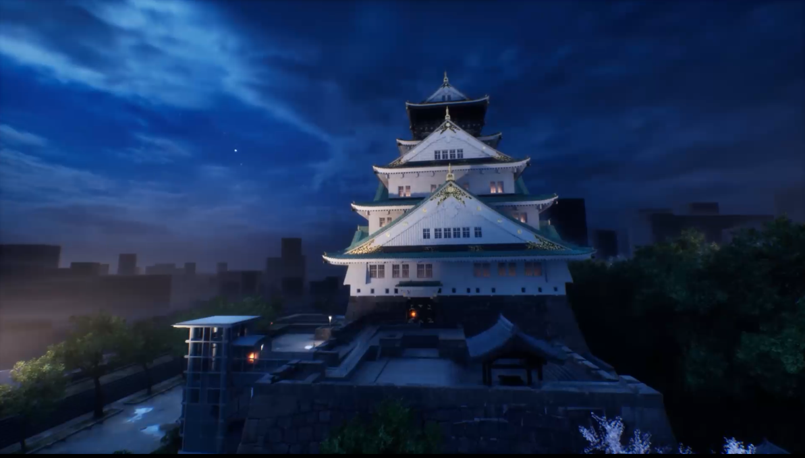
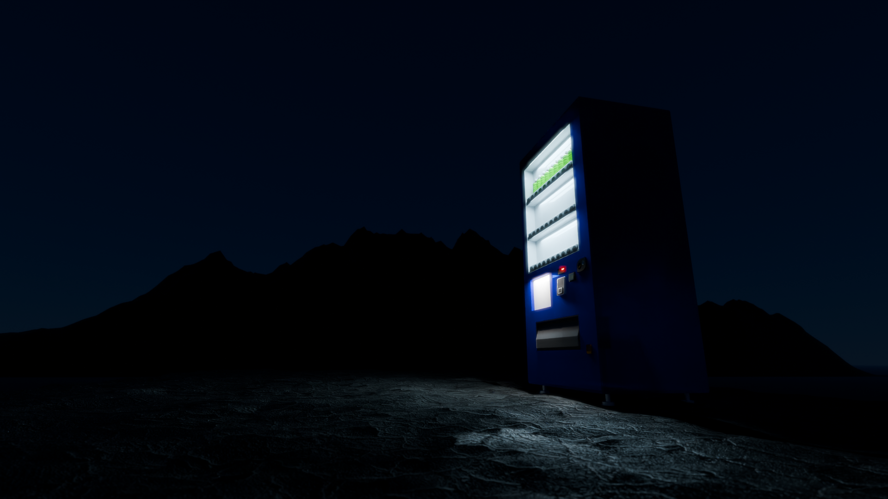

praya_dubiaという名前は世界最長級クラゲの学名から。
主に映像製作をしています。音楽やゲームの製作、CGのモデリングなど幅広く勉強中!
製作したもの
コンテストで最優秀賞をいただいた映像作品です。
作品のリンクを見る

Blenderも鋭意勉強中。

| 2024年 | 学校法人角川ドワンゴ学園 N高等学校 卒業 |
|---|---|
| 2024年 | CICERO OSAKA PVコンテスト最優秀賞 |